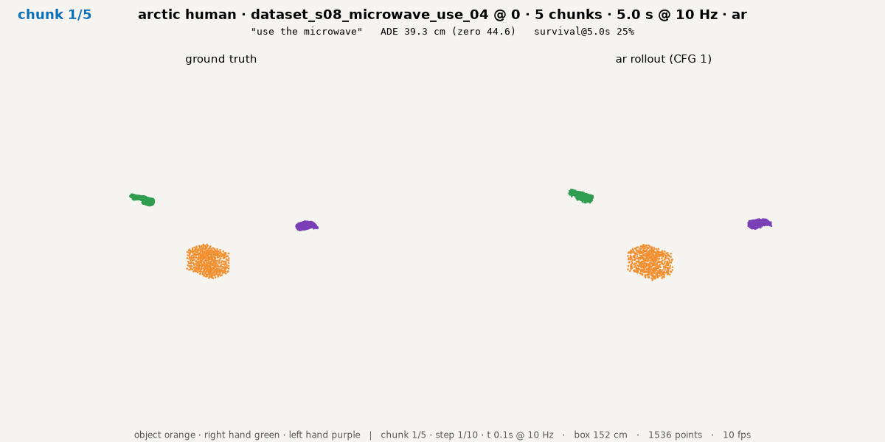
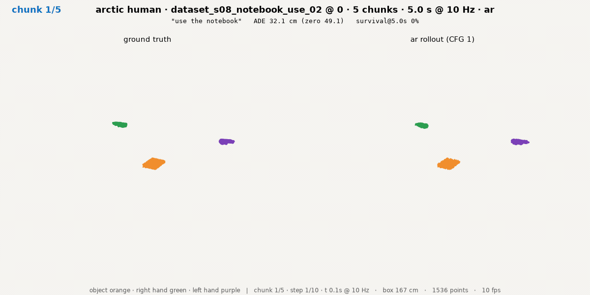
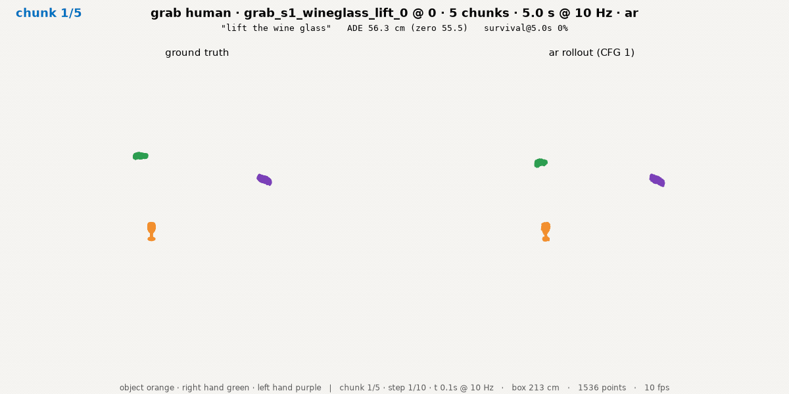
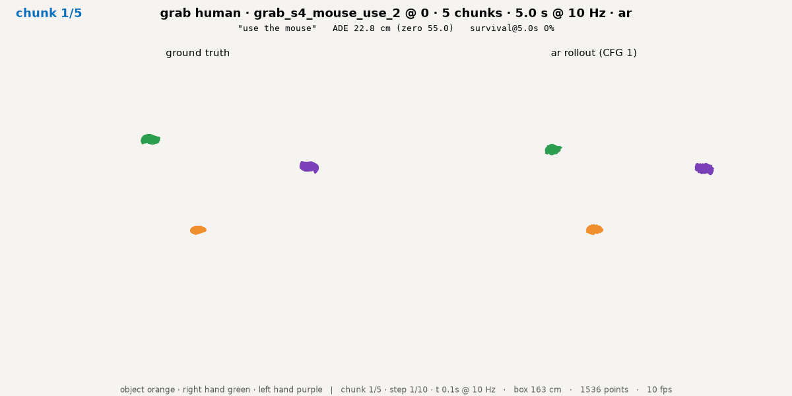
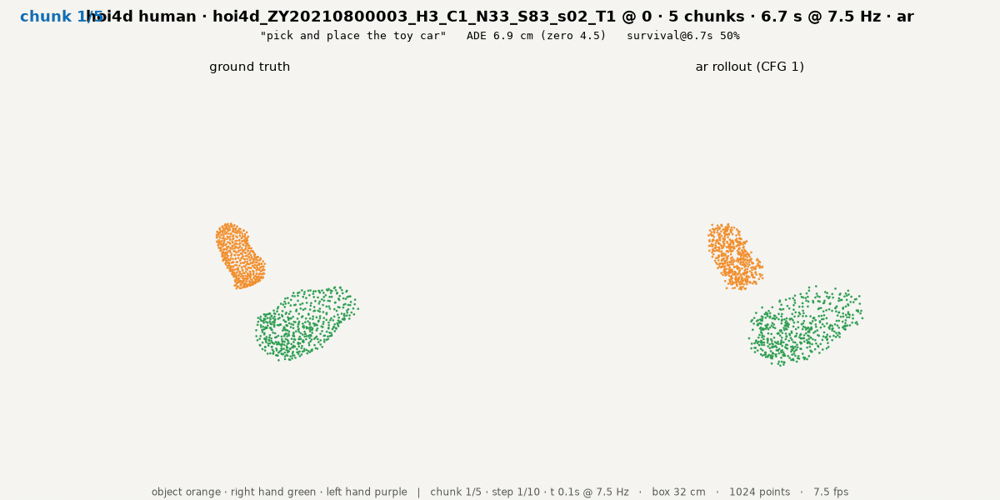
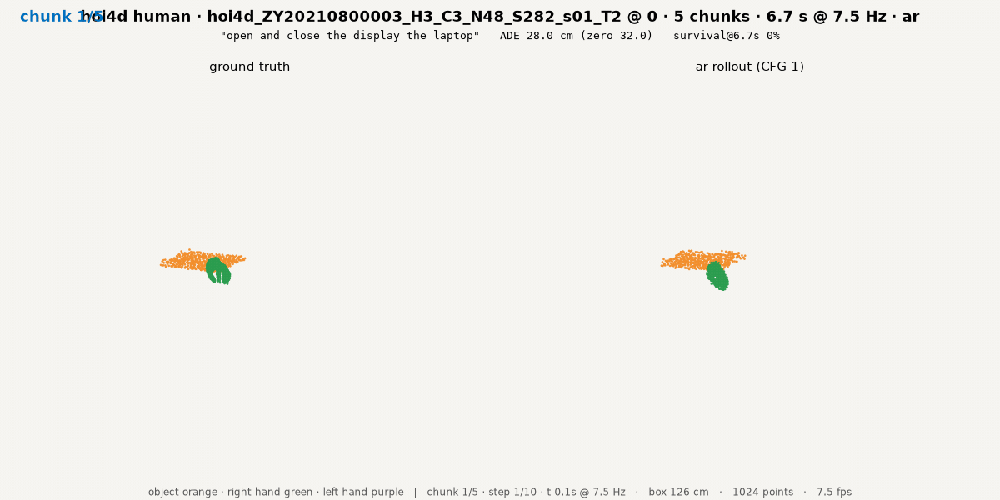

120M base · loss/fm = masked MSE on the flow target, log_every 20; smoothed (50-step running median); dotted = resumes at steps 9,213 (2 GPU) and 11,814 (4 GPU); the schedule extension to 67,200 steps applied at step 11,814 · right: learning rate
EPE3D on the dynamic subset (Chodosh 2023) with the zero-velocity reference (Martinez 2017); NOT yet owner-confirmed · logs season2/logs/s2_base_120m_{10981,11153,11270}.log
Results
First read at 1.00 epoch; ep02, ep03 and final follow tonight
Open-loop rollouts — six owner-picked clips
self-predicted AR · H = 50 · chain start = conditioning frame · season-2 frame (table-anchored origins)
CFG 1.0 · 16 Euler steps · zero = zero-velocity predictor on the same points
Closed loops — GR-1 and DexJoCo
checkpoint
eff. epoch
hand mEPE cm
hand zero cm
object mEPE cm
object zero cm
weights_ep01
1.00
51.94
72.78
22.85
26.25
weights_ep02
2.00
—
—
—
read ~15:10 KST
weights_ep03
3.00
—
—
—
read ~16:45 KST
weights_final
8.36
—
—
—
read ~02:00 Thu
Basis: six owner-picked chunks (2 ARCTIC · 2 GRAB · 2 HOI4D), AR, H = 50, mean over the six · zero = this basis's own zero predictor · ep01 read 13:00 KST, job 11154
ETA · ep02 lands ~14:40 KST (step 16,080; +0.8 h from 13:50) → read ≈ 25 min → ~15:10 · ep03 ~16:10 → read ~16:45 · final 8.36 ep 00:30–01:30 Thu (+10.7–11.7 h) → read ~02:00 Thu
eff. epoch = steps × 128 / 1,029,165 · ep01 = step 8,041 · clips on the next slide · read harness season2/RUN.md
Rollouts (1/1): six owner-picked clips
Six owner-picked chunks · weights_ep01 · self-predicted AR · H = 50

120M · step 8,041 · 1.00 ep · self-predicted AR · H = 50 · arctic/206 · 5.0 s @10 Hz

120M · step 8,041 · 1.00 ep · self-predicted AR · H = 50 · arctic/212 · 5.0 s @10 Hz

120M · step 8,041 · 1.00 ep · self-predicted AR · H = 50 · grab/613 · 5.0 s @10 Hz

120M · step 8,041 · 1.00 ep · self-predicted AR · H = 50 · grab/894 · 5.0 s @10 Hz

120M · step 8,041 · 1.00 ep · self-predicted AR · H = 50 · hoi4d/2734 · 6.7 s @7.5 Hz

120M · step 8,041 · 1.00 ep · self-predicted AR · H = 50 · hoi4d/2847 · 6.7 s @7.5 Hz
left = ground truth, right = rollout; object orange · right hand green · left hand purple; same chunk, camera, seed across checkpoints
Results
Closed loop at 1.00 epoch: 0 of 3 on both arenas
Open-loop rollouts — six owner-picked clips
Closed loops — GR-1 and DexJoCo
H = 4 replans, timestep-matched to the observed points; table-anchored origin
GR-1 PnPCanToBowl: can + bowl in the scene · DexJoCo pick_bucket
checkpoint
eff. ep
hand cm
hand zero
object cm
object zero
success
weights_ep01
1.00
4.10
4.09
7.53
6.89
0 / 3
weights_ep02
2.00
—
—
—
—
~15:10
weights_ep03
3.00
—
—
—
—
~16:45
weights_final
8.36
—
—
—
—
~02:00 Thu
GR-1 PnPCanToBowl · 267 replans · H = 4 · 3 episodes · zero = this arena's own zero predictor
checkpoint
eff. ep
hand cm
hand zero
object cm
object zero
success
weights_ep01
1.00
6.69
4.26
—
—
0 / 3
weights_ep02
2.00
—
—
—
—
~15:10
weights_ep03
3.00
—
—
—
—
~16:45
weights_final
8.36
—
—
—
—
~02:00 Thu
DexJoCo pick_bucket · 57 replans · H = 4 · 3 episodes · object: no GT object point moved > 2 cm, so not measured
'—' = not measured, not zero error · mEPE in cm, zero = zero-velocity predictor · ep01 read 13:00 KST, jobs 11155 / 11156 · composites on the next slide
Closed loops (1/1): GR-1 and DexJoCo composites
weights_ep01 · closed loop · H = 4 · three episodes per arena
season2/logs/s2_base_120m_{10981,11153,11270}.log — the relaunch chain of the 120M base; loss/fm and lr parsed from the "step N loss/fm=… lr=…" lines, log_every 20; duplicate step ranges dropped at the two resume points (9,213 · 11,814)
Reads
~/3d-wam/review/s2/s2_base_ep01_frame/ (iclr2027-gpu) — rollouts job 11154 · GR-1 job 11155 · DexJoCo job 11156; every npz records its frame provenance (season-2: gravity z-up, table-anchored origin)
Metric
mEPE@H = mean |pred − gt| over points whose GT displacement over the horizon exceeds 2 cm; hand and object separately; zero predictor = the same points held still; mpepe self-test passes (identity → 0, zero → the zero column)
six rollout GIFs + posters (season2/read_ep01_assets/roll/) · six closed-loop composites, H.264 1800×600 (read_ep01_assets/{gr1,dexjoco}/) · arch_main.png reused from decks/2026-09-05-new-base/ · loss_curve.png + mixture.png built 09-09 from the logs and the sampler shares
val loss on 32 val chunks, up to step 9,213 (job 10981)
nowhere in this deck; a curve, not a read
in-training B
val loss on 192 val chunks, from step 9,213 on (jobs 11153, 11270)
nowhere in this deck; a curve, not a read
read · rollouts
six owner-picked chunks, AR H = 50, CFG 1.0, 16 Euler steps, season-2 frame; zero predictor on the same points
Results (1) table only
read · GR-1
PnPCanToBowl, 3 episodes, 267 replans, H = 4, can + bowl, timestep-matched; its own zero predictor
Results (2) left table only
read · DexJoCo
pick_bucket, 3 episodes, 57 replans, H = 4; its own zero predictor; object not measurable (no GT object point > 2 cm)
Results (2) right table only
The in-training curve changed its val set at the first resume (32 → 192 chunks), so it is two bases; neither is quoted as a result. Reads are the only numbers in the main deck, each table on one basis with its own zero-predictor columns.
rule: DECK-STYLE §4b C — never two evaluation bases inside one table; name the basis and its own baseline wherever a number appears
Appendix A2 · Corrections on record (09-09)
item
what was wrong
fix · cost
read frame
the read harness scored the season-2 model in the season-1 frame (hand-centred z; dataset up-axis), so the first ep01 numbers were not comparable to the training frame
harness now applies the season-2 sidecar (gravity z-up, table-anchored origin); frame provenance written into every npz; ep01 re-read 13:00 KST — the numbers in this deck are the re-read
CPU starvation
the base ran 6 h on one CPU core (no --cpus-per-task), data loading bound: 2.35–6.5 s/step
relaunch chain 10981 → 11153 (2 GPU, from step 9,213) → 11270 (4 GPU, from step 11,814); ≈ 24 min + 11 min lost to the two restarts; 0.70 s/step since
schedule
the cosine schedule targeted the original step count
extension to 67,200 steps (8.36 ep) applied at step 11,814 — visible as the lr step in the loss-curve panel
val set
in-training val on 32 chunks (too few) up to step 9,213
192 chunks from the first resume on; treated as a second basis (A1)
Cut list (dropped from this deck, kept in season2/RUN.md, the logs and the read folders): per-clip mEPE for the six rollouts (the table carries the mean) · per-episode GR-1 / DexJoCo replan traces · the in-training val curves (two bases, A1) · grad-norm and s/step traces from the logs · the 320M arm's own loss curve (MLXP; no read yet) · contact and cross-embodiment metrics (deferred by owner direction 09-08) · the sampler's per-dataset chunk counts and weights (deck #2-1 discussion slide) · CFG 3.0 reads (second read at final) · the batch-32 arm (decision pending)
deck #2-2 · season 2 · built 2026-09-09 · owner: 김범준